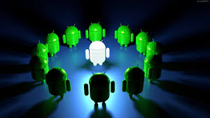

Un développeur Android est un programmeur dont la spécialité et de créer des applications mobile fonctionnant sous le système d'exploitation de Google, Android. Android, concurrent d'iOS sorti un an après ce dernier, en 2008, a été développé par une startup éponyme avant d'être racheté par Google. Le rôle du développeur Android est de programmer des applications pour smartphones et tablettes Android. À partir d’un cahier des charges ou de l’expression d’un besoin, il doit : concevoir l’architecture technique de l’application, créer son interface et ses éventuelles animations, gérer l’interaction avec l’utilisateur. Il doit également être en veille active sur ces technologies, et plus particulièrement de l’écosystème Google. Par ailleurs, un développeur Android peut facilement décliner ses applications sur d’autres plateformes comme les montres connectées Android ou l'Android TV. En tant que spécialiste de l’univers Google, le développeur Android doit être force de proposition auprès de ses clients ou de son équipe pour tirer le meilleur des nouveautés matérielles et logicielles.
|  |